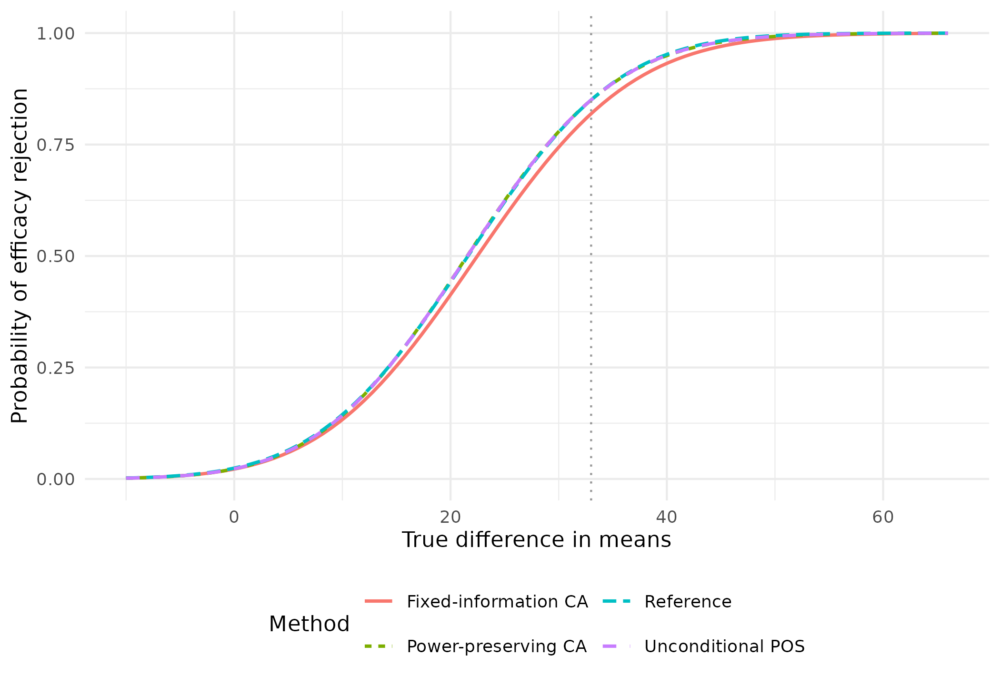
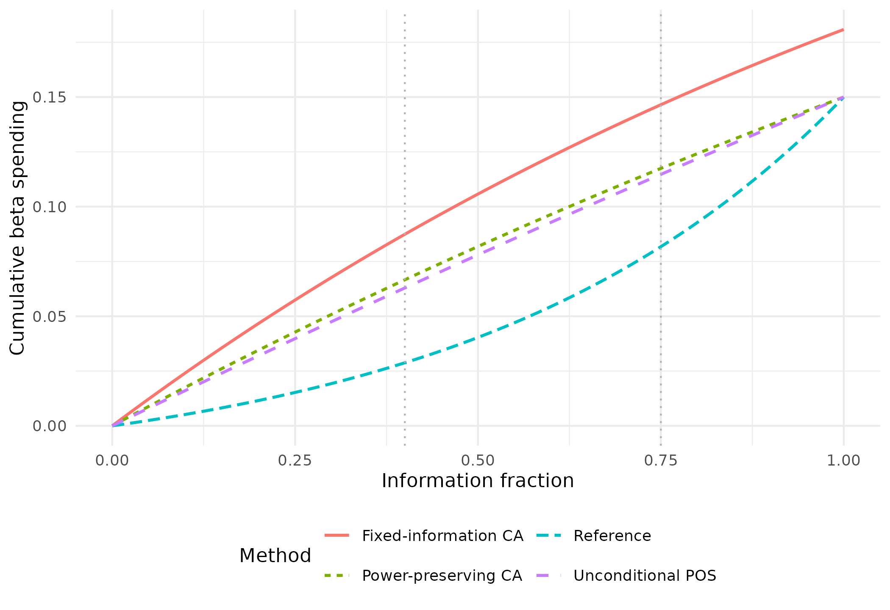

Futility spending calibrated to assurance and probability of success
Source:vignettes/DragalinFutilitySpending.Rmd
DragalinFutilitySpending.RmdThe functions in this vignette translate probability-of-success requirements into futility spending functions. They build on established computational tools in gsDesign: boundary construction, joint crossing probabilities, and prior-averaged probabilities. The new work is calibration of the spending parameters, not replacement of the underlying group sequential calculations.
Three related questions lead to three different designs:
| Function | Probability targeted | What stays fixed? | What may change? |
|---|---|---|---|
gsCPOSFutilitySpending(mode = "preserve_power") |
Conditional POS at selected interims | Planned frequentist power and relative timing | Maximum information |
gsCPOSFutilitySpending(mode = "fixed_information") |
Conditional POS at selected interims | Information and efficacy boundaries | Overall power/beta |
gsPOSFutilitySpending() |
Unconditional POS for the whole design | Planned frequentist power and relative timing | Maximum information |
All three return a spending family and fitted parameter set, a
complete design, and diagnostics. They differ from
gsCPFutilitySpending() and
gsPPFutilitySpending(), which target probabilities at an
exact interim futility bound. Those methods are described in the conditional-power vignette.
What is conditioned on?
Let \(C_i\) mean that the trial has crossed neither stopping boundary through interim \(i\), and let \(E_{>i}\) mean a later efficacy rejection. Conditional assurance is
\[ \Pr(E_{>i}\mid C_i) = \frac{\Pr(E_{>i}\cap C_i)}{\Pr(C_i)}. \]
Both probabilities average over the prespecified effect prior.
Conditioning on continuation implicitly changes the relative
plausibility of the possible effects. This is the quantity calculated by
gsCPOS(), including the full earlier stopping history.
In contrast, gsPOS() is the probability of any efficacy
rejection before seeing data; it includes early efficacy.
gsPP() conditions on a particular interim statistic and
averages future success over its posterior effect distribution. Thus
conditional assurance is not PP at the futility bound.
A high assurance among trials allowed to continue does not say that a
trial just at the boundary has high predictive power.
Without early efficacy, conditional assurance is POS divided by the prior probability of continuation. With early efficacy, its numerator must exclude those earlier successes. A point prior changes the averaging, but not this distinction between a continuation event and an exact observed statistic.
A Dragalin-related fixed-information example
Dragalin’s Informative Futility Rules Based on Conditional Assurance motivates comparing assurance among continuing trials with the assurance of a larger, feasible fixed design. Here we use the paper’s normal-outcome setting: interim sample size 72, maximum sample size 144, equal allocation, common standard deviation 70, and an effect prior \(N(33,16^2)\). These are total sample sizes across both treatment groups.
For a difference of normal means with equal allocation, the
standardized effect is the mean difference divided by \(2\,SD=140\). We use that scale throughout.
This is the paper’s informative prior, not the broader
default prior in gsBoundSummary(). We supply it explicitly
to every prior-based calculation.
effect_sd <- 70
effect_h1 <- 33
prior <- normalGrid(mu = effect_h1 / (2 * effect_sd),
sigma = 16 / (2 * effect_sd))
prior$wgts <- prior$wgts / sum(prior$wgts)
reference <- gsDesign(
k = 2, test.type = 4, delta = effect_h1 / (2 * effect_sd),
n.I = c(72, 144), maxn.IPlan = 144,
testUpper = c(FALSE, TRUE), sfl = sfHSD, sflpar = 0, r = 32
)The benchmark has a single final analysis at \(N=230\) and one-sided alpha 0.025. Since
gsDesign() constructs sequential designs, we specify the
one-look boundaries directly for probability evaluation. Both terminal
bounds are the same: every trial has a final decision.
fixed_benchmark <- structure(
list(k = 1L, test.type = 4L, n.I = 230,
upper = list(bound = qnorm(.975)),
lower = list(bound = qnorm(.975)), r = 32L, overrun = 0),
class = "gsDesign"
)
benchmark <- gsPOS(fixed_benchmark, theta = prior$z, wgts = prior$wgts)
benchmark
#> [1] 0.7901662Compute this benchmark once, not again from each candidate design.
fit_dragalin <- gsCPOSFutilitySpending(
reference, target_cpos = benchmark, i = 1, prior = prior,
mode = "fixed_information"
)
dragalin_results <- c(
Target_assurance = benchmark,
Achieved_assurance = gsCPOS(1, fit_dragalin, prior$z, prior$wgts),
Interim_N = fit_dragalin$n.I[1],
Final_N = fit_dragalin$n.I[2],
Effect_at_futility = fit_dragalin$lower$bound[1] *
2 * effect_sd / sqrt(fit_dragalin$n.I[1]),
Overall_power_H1 = sum(fit_dragalin$upper$prob[, 2]),
Fitted_beta = fit_dragalin$beta,
Fitted_sflpar = fit_dragalin$cposFutilitySpending$sflpar
)
data.frame(Quantity = names(dragalin_results), Value = unname(dragalin_results)) |>
knitr::kable(digits = 4)| Quantity | Value |
|---|---|
| Target_assurance | 0.7902 |
| Achieved_assurance | 0.7902 |
| Interim_N | 72.0000 |
| Final_N | 144.0000 |
| Effect_at_futility | 7.2740 |
| Overall_power_H1 | 0.7932 |
| Fitted_beta | 0.2068 |
| Fitted_sflpar | -1.8139 |
The target is approximately 0.7902. Solving equality gives an effect threshold of approximately 7.274, rather than the illustrative threshold of 10 in the paper (which exceeds the benchmark). The sample sizes remain 72 and 144; the achieved overall power at effect 33 is about 79.3%.
This is a spending-based implementation of the fixed-information assurance criterion. It is not a reproduction of an entire sample-size re-estimation procedure or an inverse-normal combination test.
Compare all three methods on the same reference
For a broader comparison, retain the same effect prior, SD and planned effect, but use a reference with 85% power, information fractions 0.4 and 0.75, and one active futility analysis at the first interim. There are efficacy analyses at all three looks. A single early futility analysis is often sufficient; a one-parameter spending function can also be adequate with additional futility looks after inspection of every bound.
n_fixed <- nNormal(delta1 = effect_h1, sd = effect_sd, beta = .15)
x <- gsDesign(
k = 3, test.type = 4, n.fix = n_fixed, beta = .15,
timing = c(.4, .75), delta1 = effect_h1,
sfu = sfLDOF, sfl = sfHSD, sflpar = -2,
testLower = c(TRUE, FALSE, FALSE)
)
data.frame(Fixed_design_N = n_fixed, Sequential_reference_N = tail(x$n.I, 1)) |>
knitr::kable(digits = 2)| Fixed_design_N | Sequential_reference_N |
|---|---|
| 161.59 | 168.87 |
Same conditional assurance, different sample-size and power constraints
Both fits below target conditional assurance of 0.80 at the first
interim. This is a continuation-conditioned target, not CP =
0.80 at a boundary. The package calls this conditional
probability of success (CPOS). Both fits use
gsCPOSFutilitySpending(), with mode selecting
the design constraint. "preserve_power" is the default.
Both modes use control$cpos_tol and return diagnostics in
cposFutilitySpending. The old
gsCAFutilitySpending() interface remains a compatibility
wrapper for mode = "fixed_information".
fit_cpos <- gsCPOSFutilitySpending(x, target_cpos = .80, i = 1, prior = prior)
fit_ca <- gsCPOSFutilitySpending(x, target_cpos = .80, i = 1, prior = prior,
mode = "fixed_information")
stopifnot(identical(fit_ca$n.I, x$n.I),
identical(fit_ca$upper$bound, x$upper$bound))The first fit increases information to retain 85% power. The second freezes the reference information and efficacy boundaries, allowing power to fall. The fixed-information solver also determines total beta: using the reference beta unchanged would generally not produce a consistent spending rule at the fixed final efficacy boundary.
Unconditional POS is a different requirement
POS is a single scalar for the whole design, so this interface fits one free parameter and has no interim-index argument. It rejects an unconstrained two-parameter family; one target cannot determine two parameters uniquely.
fit_pos <- gsPOSFutilitySpending(
x, target_pos = .7206, prior = prior,
control = list(start = 0, lower = -2, upper = 2, pos_tol = 1e-7)
)The precision here illustrates the solver, not a recommendation that such small POS differences are practically important. For this prior, preserving power while changing information largely offsets the effect of changing the futility rule, leaving POS nearly unchanged. This can make POS calibration weakly informative about spending shape. The objective may also be nonmonotone: matching the target does not prove a unique solution. A point prior at the planned alternative is an extreme example, because POS then equals the power already being preserved.
Verify with established probability calculations
These are fresh calculations from the returned bounds and information, rather than just the optimizer’s reported residuals.
verification <- data.frame(
Method = c("Power-preserving CA", "Fixed-information CA", "Unconditional POS"),
Target = c(.80, .80, .7206),
Achieved = c(gsCPOS(1, fit_cpos, prior$z, prior$wgts),
gsCPOS(1, fit_ca, prior$z, prior$wgts),
gsPOS(fit_pos, prior$z, prior$wgts))
)
knitr::kable(verification, digits = 6)| Method | Target | Achieved |
|---|---|---|
| Power-preserving CA | 0.8000 | 0.8000 |
| Fixed-information CA | 0.8000 | 0.8000 |
| Unconditional POS | 0.7206 | 0.7206 |
stopifnot(max(abs(verification$Achieved - verification$Target)) < 1e-4)
# Verify that total beta and the fitted lower spending agree.
desired_beta <- fit_ca$lower$sf(
fit_ca$beta, fit_ca$lower$sTime, fit_ca$lower$param
)$spend
# At the inactive second futility look, spending is deferred.
desired_beta[2] <- desired_beta[1]
stopifnot(max(abs(cumsum(fit_ca$lower$prob[, 2]) - desired_beta)) < 1e-5)For the power-preserving fit, replay the fitted spending parameter in
an ordinary gsDesign() call with the complete reference
specification:
replay <- gsDesign(
k = 3, test.type = 4, n.fix = n_fixed, beta = .15,
timing = c(.4, .75), delta1 = effect_h1,
sfu = sfLDOF, sfl = sfHSD,
sflpar = fit_cpos$cposFutilitySpending$sflpar,
testLower = c(TRUE, FALSE, FALSE)
)
gsCPOS(1, replay, prior$z, prior$wgts)
#> [1] 0.8For the fixed-information fit, replay with
gsCPOSFutilitySpending(mode = "fixed_information") and the
original reference, using the fitted free parameters as the start. An
ordinary power-preserving reconstruction is not equivalent.
Operating characteristics, not just a target
designs <- list(Reference = x, "Power-preserving CA" = fit_cpos,
"Fixed-information CA" = fit_ca, "Unconditional POS" = fit_pos)
operating <- do.call(rbind, lapply(names(designs), function(label) {
d <- designs[[label]]
p <- gsProbability(d = d, theta = c(0, x$delta))
data.frame(
Method = label, Max_N = tail(d$n.I, 1),
Inflation_percent = 100 * (tail(d$n.I, 1) / n_fixed - 1),
Actual_type_I = sum(p$upper$prob[, 1]),
Power_H1 = sum(p$upper$prob[, 2]),
POS = gsPOS(d, prior$z, prior$wgts),
CA_at_IA1 = gsCPOS(1, d, prior$z, prior$wgts),
Futility_H0 = sum(p$lower$prob[-d$k, 1]),
Futility_H1 = sum(p$lower$prob[-d$k, 2]),
EN_H0 = p$en[1], EN_H1 = p$en[2]
)
}))
knitr::kable(operating[c("Method", "Max_N", "Inflation_percent",
"Actual_type_I", "Power_H1")], digits = 4)| Method | Max_N | Inflation_percent | Actual_type_I | Power_H1 |
|---|---|---|---|---|
| Reference | 168.8726 | 4.5038 | 0.0243 | 0.8500 |
| Power-preserving CA | 180.7590 | 11.8595 | 0.0226 | 0.8500 |
| Fixed-information CA | 168.8726 | 4.5038 | 0.0222 | 0.8192 |
| Unconditional POS | 179.2358 | 10.9169 | 0.0228 | 0.8500 |
| Method | POS | CA_at_IA1 | Futility_H0 | Futility_H1 |
|---|---|---|---|---|
| Reference | 0.7210 | 0.7444 | 0.5152 | 0.0288 |
| Power-preserving CA | 0.7206 | 0.8000 | 0.6925 | 0.0666 |
| Fixed-information CA | 0.7010 | 0.8000 | 0.7192 | 0.0874 |
| Unconditional POS | 0.7206 | 0.7947 | 0.6790 | 0.0629 |
| Method | EN_H0 | EN_H1 |
|---|---|---|
| Reference | 116.24 | 135.14 |
| Power-preserving CA | 105.20 | 138.56 |
| Fixed-information CA | 95.58 | 129.47 |
| Unconditional POS | 105.76 | 138.04 |
The fixed design requires about 161.6 participants. Sample sizes are continuous planning values; rounding requires another check of the resulting operating characteristics and target probabilities. The inflation column uses that fixed design, not the sequential reference, as its denominator. Much of the inflation in these examples is the cost of preserving power despite futility stopping. A practical maximum, such as 20% inflation, should be considered alongside the probability target; none of these functions automatically enforces such a cap.
For nonbinding futility, the nominal efficacy-only alpha remains
0.025, while actual type I error with futility enforced may be smaller.
With a binding reference (test.type = 3), freezing efficacy
while changing futility can increase actual type I error above the
reference alpha. The fixed-information method reports that probability;
it does not guarantee alpha preservation.
effect <- seq(-10, 66, length.out = 101)
curves <- do.call(rbind, lapply(names(designs), function(label) {
p <- gsProbability(d = designs[[label]], theta = effect / (2 * effect_sd))
data.frame(Effect = effect, Power = colSums(p$upper$prob), Method = label)
}))
ggplot(curves, aes(Effect, Power, colour = Method, linetype = Method)) +
geom_line(linewidth = .8) +
geom_vline(xintercept = effect_h1, colour = "grey60", linetype = 3) +
labs(x = "True difference in means", y = "Probability of efficacy rejection") +
theme_minimal() + theme(legend.position = "bottom") +
guides(colour = guide_legend(nrow = 2), linetype = guide_legend(nrow = 2))
Sample sizes and approximate effects at all bounds
A probability target is not a substitute for judging whether the effect at a futility boundary is clinically reasonable. Approximate mean differences below are \(Z \times 2\,SD/\sqrt{N}\); they are normal-theory approximations, not bias-adjusted sequential estimates. Inactive futility analyses have no reported futility effect.
bounds <- do.call(rbind, lapply(names(designs), function(label) {
d <- designs[[label]]
lower_effect <- d$lower$bound * 2 * effect_sd / sqrt(d$n.I)
lower_effect[!d$testLower] <- NA_real_
data.frame(Method = label, Analysis = seq_len(d$k), N = d$n.I,
Efficacy_effect = d$upper$bound * 2 * effect_sd / sqrt(d$n.I),
Futility_effect = lower_effect)
}))
knitr::kable(bounds, digits = 3)| Method | Analysis | N | Efficacy_effect | Futility_effect |
|---|---|---|---|---|
| Reference | 1 | 67.549 | 57.181 | 0.650 |
| Reference | 2 | 126.654 | 29.170 | NA |
| Reference | 3 | 168.873 | 21.681 | NA |
| Power-preserving CA | 1 | 72.304 | 55.269 | 8.280 |
| Power-preserving CA | 2 | 135.569 | 28.195 | NA |
| Power-preserving CA | 3 | 180.759 | 20.956 | NA |
| Fixed-information CA | 1 | 67.549 | 57.181 | 9.886 |
| Fixed-information CA | 2 | 126.654 | 29.170 | NA |
| Fixed-information CA | 3 | 168.873 | 21.681 | NA |
| Unconditional POS | 1 | 71.694 | 55.503 | 7.688 |
| Unconditional POS | 2 | 134.427 | 28.315 | NA |
| Unconditional POS | 3 | 179.236 | 21.045 | NA |
The standard summary adds CP, CP H1 and PP at the bounds. The prior here remains the explicit Dragalin prior. Those bound-based quantities should not be mistaken for the continuation-conditioned targets above.
gsBoundSummary(fit_ca, prior = prior, exclude = "B-value", digits = 4)
#> Analysis Value Efficacy Futility
#> IA 1: 40% Z 3.3569 0.5803
#> N: 68 p (1-sided) 0.0004 0.2808
#> ~delta at bound 57.1812 9.8856
#> Spending 0.0004 0.0874
#> CP 1.0000 0.0811
#> CP H1 0.9964 0.6017
#> PP 0.9966 0.3454
#> P(Cross) if delta=0 0.0004 0.7192
#> P(Cross) if delta=33 0.0779 0.0874
#> IA 2: 75% Z 2.3449 NA
#> N: 127 p (1-sided) 0.0095 NA
#> ~delta at bound 29.1705 NA
#> Spending 0.0093 NA
#> CP 0.9178 NA
#> CP H1 0.9416 NA
#> PP 0.9076 NA
#> P(Cross) if delta=0 0.0094 NA
#> P(Cross) if delta=33 0.6145 NA
#> Final Z 2.0125 NA
#> N: 169 p (1-sided) 0.0221 NA
#> ~delta at bound 21.6812 NA
#> Spending 0.0154 NA
#> P(Cross) if delta=0 0.0222 NA
#> P(Cross) if delta=33 0.8192 NAHere CP at the futility bound is about 0.081 and PP is about 0.345, even though conditional assurance among continuing trials is 0.80. This concrete contrast is why the conditioning event needs to be stated whenever a target is quoted.
The final specification is still a spending function
times <- seq(0, 1, length.out = 301)
spending <- do.call(rbind, lapply(names(designs), function(label) {
d <- designs[[label]]
data.frame(Time = times, Spend = d$lower$sf(d$beta, times, d$lower$param)$spend,
Method = label)
}))
ggplot(spending, aes(Time, Spend, colour = Method, linetype = Method)) +
geom_line(linewidth = .8) +
geom_vline(xintercept = c(.4, .75), colour = "grey70", linetype = 3) +
labs(x = "Information fraction", y = "Cumulative beta spending") +
theme_minimal() + theme(legend.position = "bottom") +
guides(colour = guide_legend(nrow = 2), linetype = guide_legend(nrow = 2))
These curves need not cross at the calibration time: the target is conditional assurance or POS, not cumulative beta spending. The fixed-information design can also have a different total beta. The curves describe the spending family; actual spending is deferred at inactive futility analyses.
Spending functions retain the original motivation of the Lan–DeMets approach: the specification can accommodate different information times and, under an appropriate monitoring plan, a different number of analyses. They provide a continuous rule between planned looks, a compact reproducible specification, and a framework for recalculating boundaries while respecting spending already used. This flexibility is particularly useful when actual information accrues differently from the original plan.
It does not mean that one should refit parameters freely after seeing treatment effects, or that changing the monitoring schedule preserves the original assurance target or power exactly. Re-evaluate the resulting design and its operating characteristics. Timing changes informed by unblinded outcomes need additional justification.
Building on established computational tools with AI
The calibration framework builds on existing gsDesign tools rather than new probability-integration machinery. Most of the initial CP/PP development was done interactively with AI using GPT-6 Astra High in Codex over a long weekend. The later assurance extensions follow the same principle: rapidly build new design interfaces on established computational tools.
Validation need not rest solely on line-by-line inspection of
generated code. Reconstruct fitted designs and check their properties
with gsDesign(), gsProbability(),
gsCPOS(), gsPOS() and
gsBoundSummary(). Unit tests also check independent
bivariate-normal integration, the numerical Dragalin benchmark,
parameter replay, input errors and numerical failure handling. These
checks support the statistical results; they do not establish that every
possible software defect has been excluded.
Scope and practical limits
- Current assurance/POS calibration supports fixed-timing statistical
gsDesignobjects with test types 3 and 4, not direct survival objects. - Harm-bound designs are excluded: current
gsCPOS()does not include harm stopping in its continuation denominator. - Conditional-assurance fits support the existing one-/two-parameter families and piecewise linear spending, with one target per free parameter.
- POS has only one design-wide target and fits one free parameter.
- Prior weights are normalized, and the prior is fixed throughout
calibration. Continuation probabilities at or below
sqrt(.Machine$double.eps)are rejected for conditional assurance. - A failed numerical search is not a proof of mathematical infeasibility. A matched target is not proof that the design is clinically attractive.
- Review overall power, actual type I error, expected and maximum sample size, stopping probabilities, effect sizes at bounds, and sensitivity to the prior and monitoring schedule before choosing a design.
References
Dragalin V. Informative Futility Rules Based on Conditional Assurance. Statistics in Medicine (2026). doi:10.1002/sim.70330.
Lan KKG, DeMets DL. Discrete sequential boundaries for clinical trials. Biometrika (1983), 70:659–663. doi:10.1093/biomet/70.3.659.